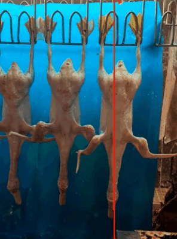

Built for existing production lines.
The setup uses a single visible-light camera recording at 30 fps while the line travels at 0.5 m/s. It avoids specialized depth sensors, multiple cameras, and intrusive mechanical retrofits.
Computer Vision · Precision Agriculture
A low-cost, noncontact system that estimates the weight of moving White Pekin duck carcasses from ordinary 2D video using an end-to-end convolutional neural network.

The idea
Traditional conveyor scales require carcasses to be transferred away from the production line. Our system adds a monocular camera and a simple blue backdrop to the existing line, then predicts weight directly from the captured silhouettes.

The setup uses a single visible-light camera recording at 30 fps while the line travels at 0.5 m/s. It avoids specialized depth sensors, multiple cameras, and intrusive mechanical retrofits.
Method
Each duck is observed from multiple nearby angles. A lightweight preprocessing pipeline isolates its body shape before a compact CNN regresses the silhouette directly to a continuous weight estimate.
A monocular camera records carcasses against a blue backdrop as they pass through its field of view.
The red channel is thresholded and cleaned, the feet are excluded, and each silhouette is resized to 253 × 80 pixels.
Three convolutional layers learn visual features end to end; predictions across views are averaged for a stable final estimate.

Results
Ten-fold cross-validation keeps images of the same duck out of both training and testing splits. The CNN substantially reduces estimation error compared with two established 2D image-based baselines.
Lower is better · measured in grams

Predictions from multiple angles are averaged to produce the final carcass weight estimate.
Inside the experiments
The complete paper figures connect the headline result to the traditional baselines and the design decisions behind the final CNN.
Pixel-area regression and a handcrafted-feature ANN are evaluated beside our end-to-end CNN on the same data.

Learning curves and error distributions reveal the most reliable architecture and training setup.

The proposed CNN reduces mean absolute deviation by 52.4% compared with pixel-area linear regression and by 45.0% compared with the handcrafted-feature ANN baseline—without requiring a depth camera or manual feature design.
Citation
The implementation and processed dataset are publicly available. For the original dataset, please refer to the data availability statement in the paper.
@article{chen2023online,
title = {Online Estimating Weight of White Pekin Duck Carcass by Computer Vision},
author = {Chen, Ruoyu and Zhao, Yuliang and Yang, Yongliang and Wang, Shuyu and Li, Lianjiang and Sha, Xiaopeng and Liu, Lianqing and Zhang, Guanglie and Li, Wen Jung},
journal = {Poultry Science},
volume = {102},
number = {2},
pages = {102348},
year = {2023},
doi = {10.1016/j.psj.2022.102348}
}
Visitors around the world